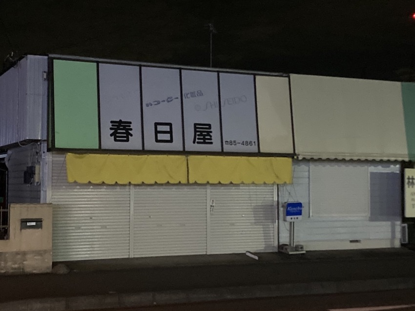
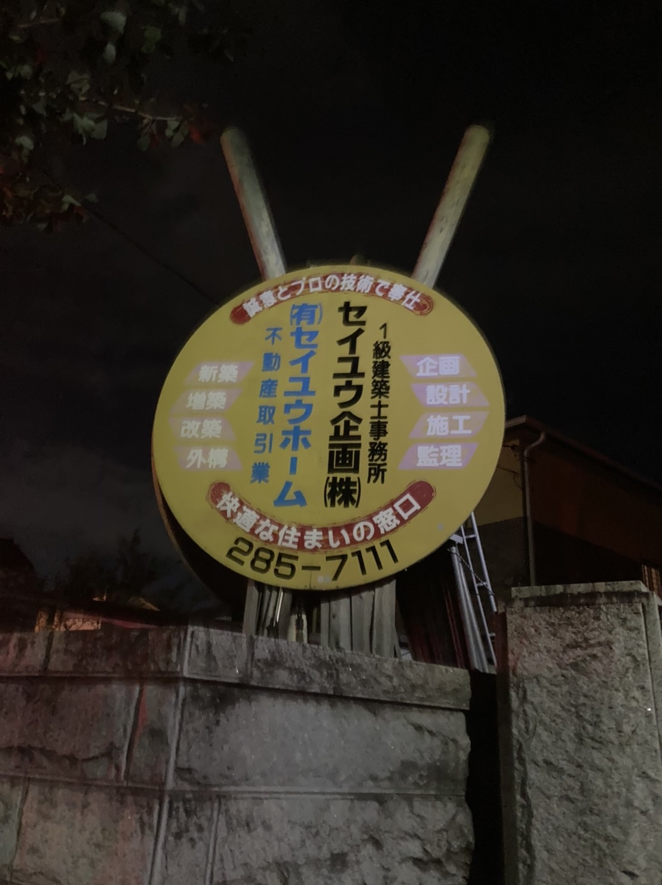
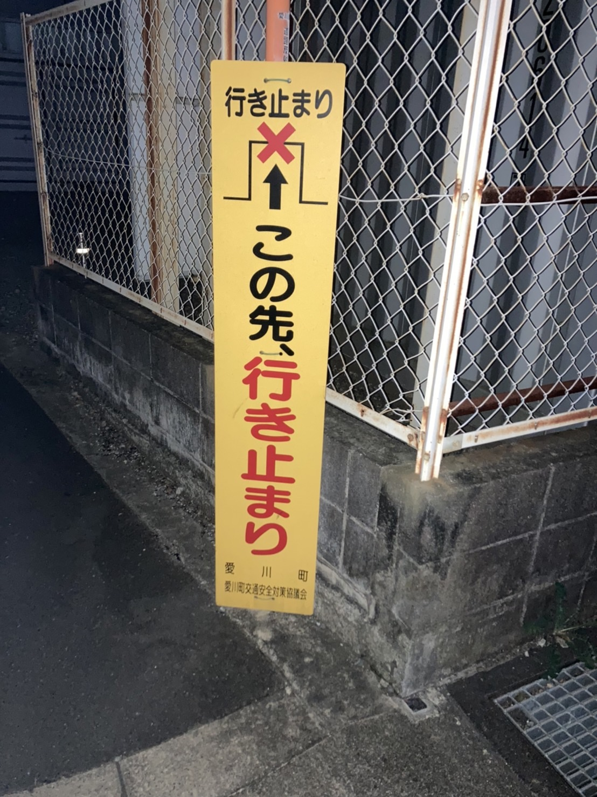

XBP Assignment2
サインや看板
10月１０日 神奈川県愛川町 自身で撮影

古くて昭和を感じる
10月１０日 神奈川県愛川町 自身で撮影

家も近くにある看板です。丸型というのも独特でさらに支柱がパイプや梯子などで出来ていて面白いと思った。
10月１０日 神奈川県愛川町 自身で撮影

これも家の近くにある看板です。行き止まりの看板が書いてあるのに何故かたくさんの人が間違えるのです。
デザイン演習I・II
XBPトップページ